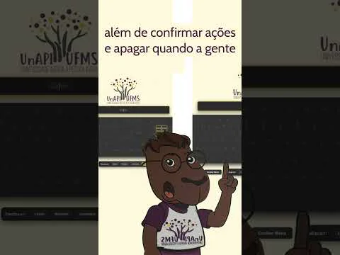
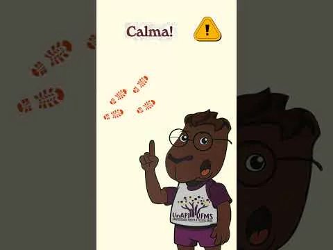

Oficinas de informática
Vídeos das oficinas
← Voltar ao início
Ferramentas
Escolha um vídeo

▶
Primeira oficina
Assistir
↗
▶
Participantes em atividade
Assistir
↗
▶
Prática com acompanhamento
Assistir
↗

▶
Atividades da oficina
Assistir
↗